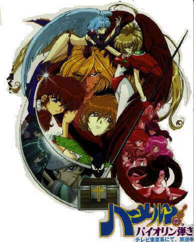

Defaced By Perfect.br... oh, yeah!!
Another Cartoon for ya!

Tudo sobre as nações
"Eu estou
querendo saber todos esses dias
como florescer o caminho que nós erramos
um ano, uma vida- dividida juntamente
irá ser tudo igual
muitas coisas me fazem triste
muitas podem me deixar louco
apenas tema para sempre, não mais esforços
me deixe aonde eu levantei
você está aqui
e me faça sentir muito bem
dia por dia
uma coisa que eu não posso negar
deixe dar outras certezas"